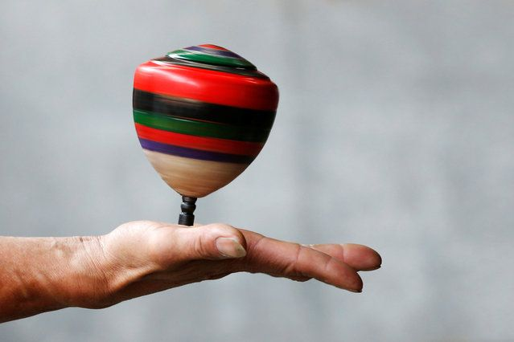

El trompo es un juguete tradicional de madera con forma de pera o cono invertido, con una punta metálica en la base. Se hace girar mediante una cuerda llamada "piola" que se enrolla alrededor de su cuerpo.
Primero se enrolla la piola alrededor del trompo, comenzando desde la punta hacia arriba. Se sostiene el trompo con la mano izquierda y se sujeta el extremo libre de la piola con la derecha.
Con un movimiento rápido y firme del brazo, se lanza el trompo hacia el suelo mientras se tira de la piola. El trompo debe caer sobre su punta y girar ("bailar") el mayor tiempo posible.
Existen varias competencias: hacerlo bailar más tiempo, levantarlo en la palma de la mano mientras gira, hacer trucos como "el picotazo", "el puente" o "la corona".
👥 Jugadores: De 1 a 5 participantes.
⏱️ Duración: Cada ronda 1-5 min. Partida: 15-30 min.
🎯 Objetivo: Hacer bailar el trompo el mayor tiempo posible.
🧰 Materiales: Un trompo de madera con punta metálica y su piola.
• Enrolla bien la piola: Apretada y uniforme.
• Movimiento firme: Lanzamiento rápido y decidido.
• Superficie adecuada: Cemento liso o tierra dura.
Haz clic en el trompo para darle impulso. ¡Que no pare de girar!